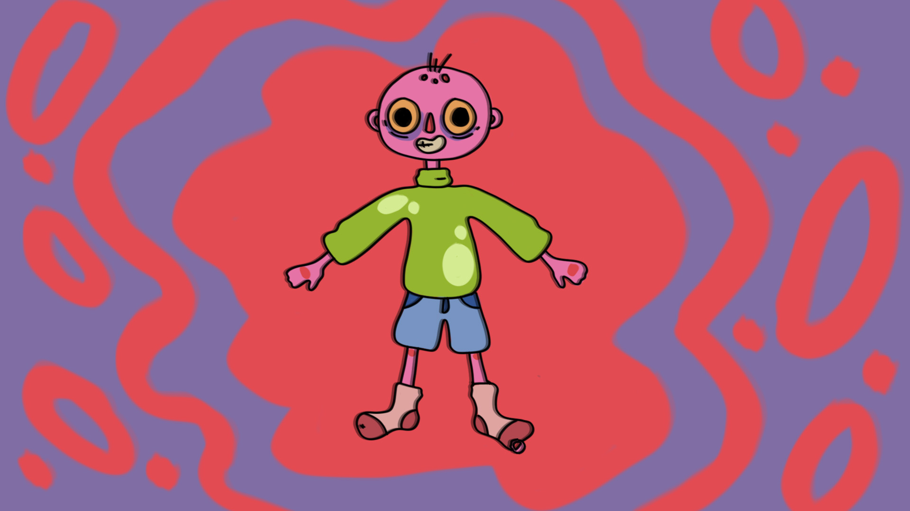
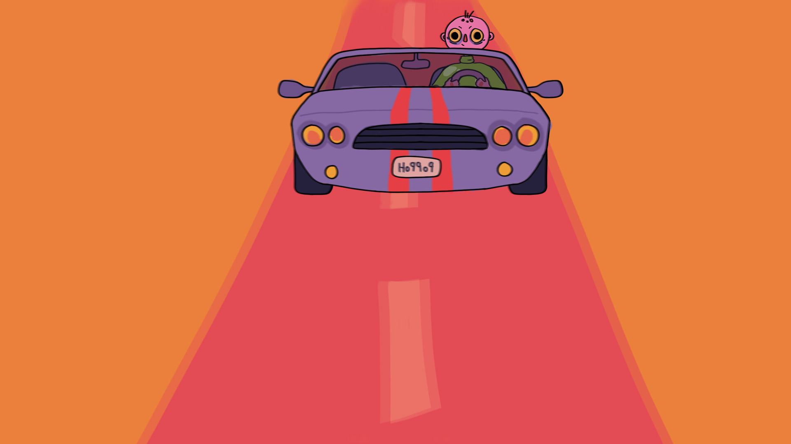

Concept
This is a short motion graphics animated video inspired by the song "Atropellando Viejas" by Skimales, a Spanish rock band. The theme is a boy who navigates the streets behind the wheel, finding excitement in an unconventional hobby: running over grannies.
Softwares
Adobe Photoshop and Adobe After Effects.

